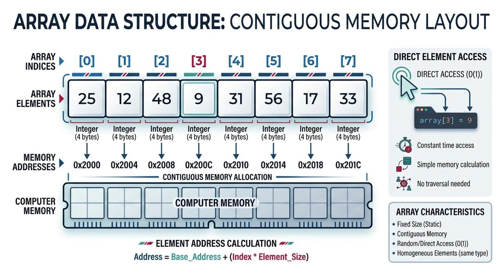
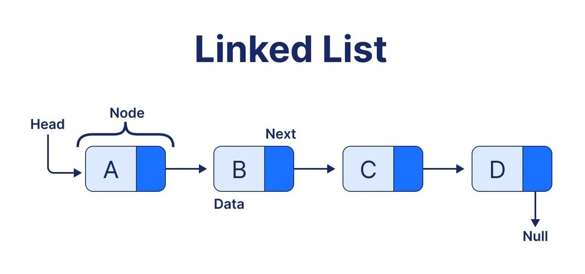
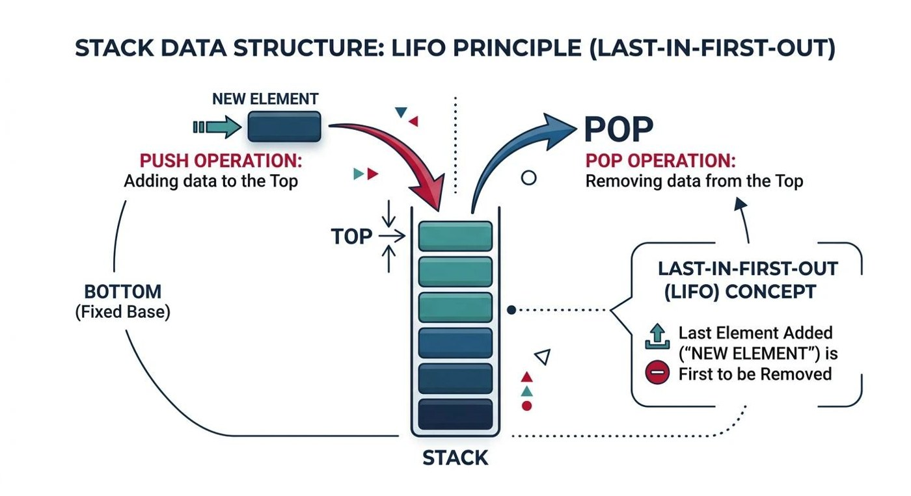
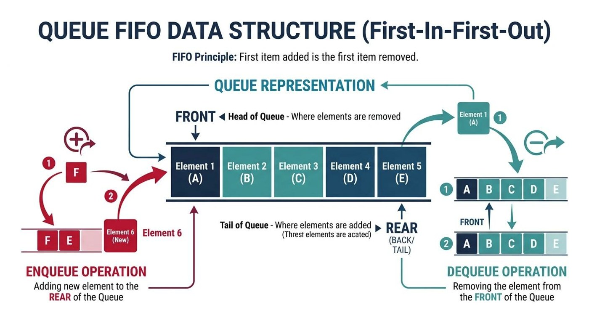
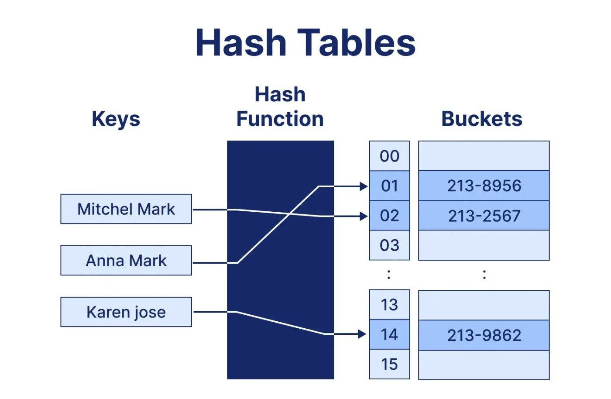
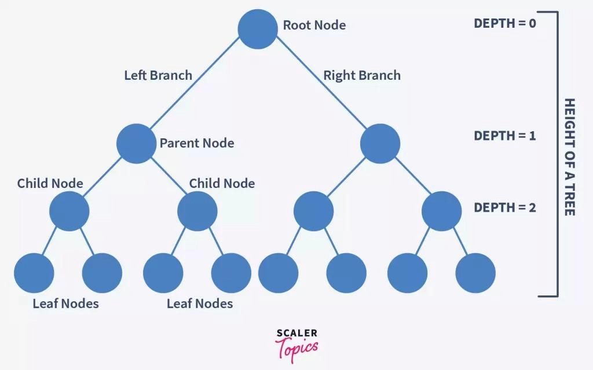
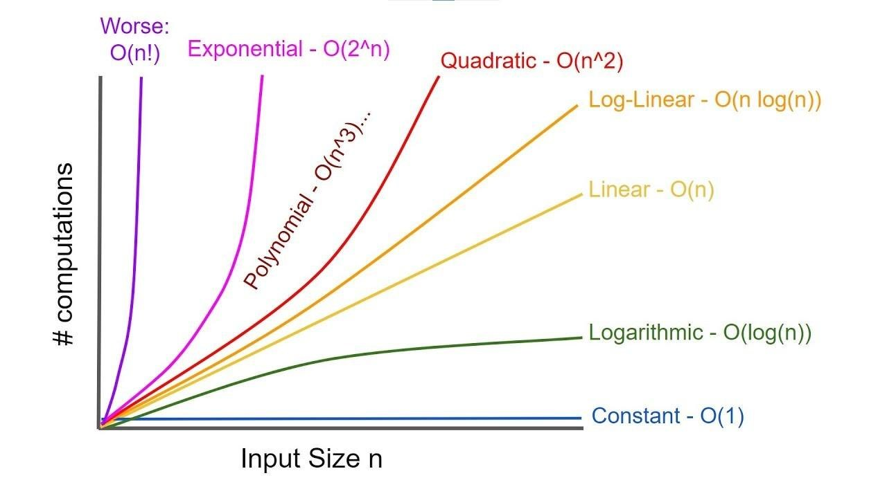
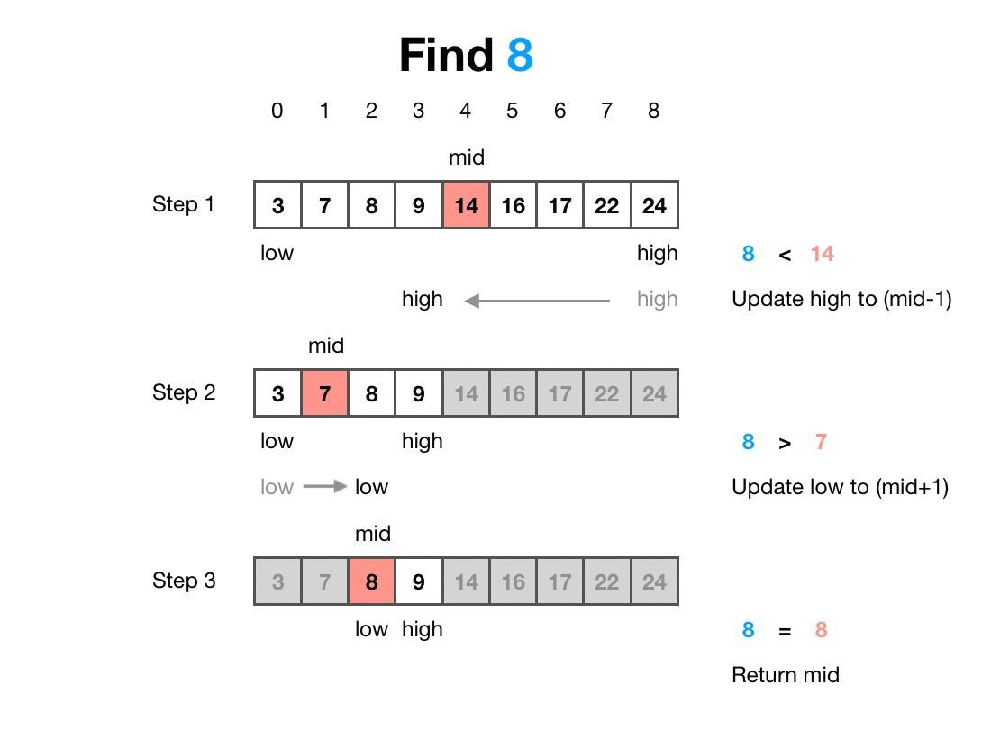

فهم المشكلة وتحليل تفاصيلها، ثم تصميم خطوات منطقية لحلها، وكتابة الحل واختباره للتأكد من صحته وكفاءته.
يركّز على كتابة الكود وتنفيذ الحل
يبدأ بفهم المشكلة، ويحلّلها، ثم يختار الطريقة الأنسب قبل كتابة الكود
فهم المشكلة وتقسيمها إلى أجزاء واضحة
تطوير القدرة على إيجاد حلول لمشكلات غير مألوفة
استغلال أفضل للوقت والذاكرة
مهارة أساسية في ICPC وCodeforces ومقابلات العمل التقنية
فهم المطلوب والمدخلات والمخرجات والقيود
تحليل المشكلة وتحديد الحالات والأمثلة
اختيار الفكرة وتصميم الخوارزمية المناسبة
تحويل الحل إلى كود
اختبار الحل واكتشاف الأخطاء ومعالجتها
تحسين استهلاك الوقت والذاكرة عند الحاجة
| المرحلة | ما الذي نحدده؟ |
|---|---|
| 1. Understand | ما المعطيات؟ ما المطلوب؟ ما حدود المدخلات؟ وهل يمكن توضيح المشكلة بمثال؟ |
| 2. Analyze | ما الحالات الخاصة؟ مثل المدخل الفارغ، وعنصر واحد، والقيم المكررة أو السالبة |
| 3. Design | ما الحل الممكن؟ وهل توجد طريقة أبسط أو أكثر كفاءة؟ |
| 4. Implement | تحويل الخطوات إلى كود واضح ومنظّم |
| 5. Test & Debug | اختبار الحالات المختلفة واكتشاف الحالات التي قد يفشل فيها الحل |
| 6. Optimize | تحسين استهلاك الوقت والذاكرة بعد التأكد من صحة الحل |
افهم المشكلة وحدّد المطلوب قبل البدء بالكتابة
تأكد من صحة الحل أولاً، ثم حسّن كفاءته
اختيار الاستراتيجية المناسبة يسهّل الوصول إلى الحل
لدينا قائمة بالأرقام الجامعية لمجموعة من الطلاب، ونريد معرفة هل يوجد رقمان متطابقان؟ يمكن مقارنة كل رقم ببقية الأرقام، لكن هل هذه الطريقة هي الأفضل؟
خطوات مرتبة وواضحة للوصول إلى نتيجة محددة
طرق لتنظيم البيانات وتخزينها والتعامل معها
قياس كفاءة الحل من حيث الوقت والذاكرة
البحث عن عنصر داخل مجموعة من البيانات
ترتيب البيانات وفق معيار محدد
اختيار أفضل خيار متاح في كل خطوة
حل المشكلة من خلال استدعاء الحل لمشكلة أصغر من النوع نفسه






| العملية المطلوبة | الهيكل المناسب |
|---|---|
| الوصول المباشر باستخدام Index | Array |
| التحقق من وجود عنصر أو حساب التكرارات | Hash Table |
| آخر عنصر يدخل هو أول عنصر يخرج (Undo، الأقواس) | Stack |
| أول عنصر يدخل هو أول عنصر يخرج (الطلبات بالترتيب) | Queue |
| إضافة وحذف العناصر بشكل متكرر | Linked List |
| تنظيم البيانات ذات العلاقات الهرمية | Tree |
كيف يتغيّر عدد العمليات مع زيادة حجم المدخلات؟
كيف تتغيّر الذاكرة الإضافية التي يحتاجها الحل؟

| التعقيد | مثال | عدد العمليات عند n = 1,000,000 |
|---|---|---|
| O(1) | الوصول إلى عنصر باستخدام Index | 1 |
| O(log n) | Binary Search | ≈ 20 |
| O(n) | المرور على Array | 1,000,000 |
| O(n log n) | Merge Sort | ≈ 20,000,000 |
| O(n²) | مقارنة كل عنصر مع بقية العناصر | 1,000,000,000,000 |
تحديد المطلوب والمدخلات والمخرجات
تحديد القيود والحالات الخاصة
اختيار الفكرة والخوارزمية المناسبة
تنفيذ الحل باستخدام C++
التحقق من الصحة ومراجعة الكفاءة
الفكرة الأساسية واحدة: نفهم المشكلة ونصمّم Algorithm صحيحة، وبعدها نكتبها باللغة التي نختارها.
لكن اللغة تؤثر على طريقة كتابة الحل، وسرعة التنفيذ، وسهولة التعامل مع بعض الأدوات.
سريعة، وتوفّر STL ومكتبات مهمة للمسابقات.
صياغتها مختصرة، ومناسبة للتجربة وكتابة الحلول بسرعة.
توفّر Collections وأداء جيداً، لكن الكود غالباً أطول.
مفيدة في مجالات الويب، وتُستخدم أيضاً في بعض منصات المسابقات.
| اللغة | نقاط القوة | أمور ننتبه لها في المسابقات |
|---|---|---|
| C++ | سرعة التنفيذ، STL، تحكم أكبر بالذاكرة | تحتاج انتباهاً للأنواع والذاكرة وبعض التفاصيل |
| Python | كود قصير وواضح، وأعداد صحيحة كبيرة تلقائياً | قد تكون أبطأ في المسائل ذات القيود الكبيرة |
| Java | Collections، وأنواع واضحة، وأداء جيد | كود أطول واستهلاك ذاكرة قد يكون أعلى |
| JavaScript | مرنة وسهلة لمن يعرف بيئة الويب | الانتباه إلى Number والدقة وحدود الأعداد |
vector وsort وqueue وmap.بالتأكيد لا. استخدم اللغة التي تتقنها وتسمح بها المسابقة، وتعلّم نقاط قوتها وحدودها.
C++ حتى نركّز على الخوارزميات وطرق التفكير الشائعة في المسابقات.
Given a string s consisting only of the bracket characters (), [], and {}, determine whether the brackets are balanced.
A string is balanced if every opening bracket has a matching closing bracket of the same type, and each pair of brackets is closed in the correct order. For example, ([]) is balanced, while ([)] is not.
A single line containing a string s.
Print YES if the string contains correctly matched and ordered brackets; otherwise, print NO.
1 ≤ |s| ≤ 100,000
The string contains only the characters ()[]{}.
()[]{}
YES
([)]
NO
المدخل نص يحتوي على أقواس، والمخرج YES أو NO
آخر قوس تم فتحه هو أول قوس يجب إغلاقه
Stack لأن طريقة عمله تعتمد على LIFO
| الاختبار | النتيجة | السبب |
|---|---|---|
| {[()]} | YES | جميع الأقواس أُغلقت بالترتيب الصحيح |
| ([)] | NO | ترتيب الإغلاق غير صحيح |
| (( | NO | بقيت أقواس مفتوحة داخل Stack |
| ) | NO | يوجد قوس إغلاق دون قوس فتح سابق |
Given an array of n integers and an integer Target, determine whether there are two distinct elements in the array whose sum is equal to Target.
You must use two different array elements. The same element cannot be used twice.
Line 1: An integer n, the number of elements.
Line 2: n integers representing the array.
Line 3: An integer Target, the required sum.
Print YES if two distinct elements have a sum equal to Target; otherwise, print NO.
2 ≤ n ≤ 200,000
-10⁹ ≤ a[i] ≤ 10⁹
-10⁹ ≤ Target ≤ 10⁹
5 2 7 11 15 3 9
YES
3 1 2 3 7
NO
استخدام حلقتين متداخلتين لمقارنة كل عنصر مع العناصر الأخرى، بتعقيد O(n²)
لكل رقم x نحتاج إلى معرفة ما إذا كان الرقم Target - x موجوداً
نستخدم Hash Set للتحقق بسرعة من وجود الرقم المطلوب
| الحل | Time Complexity | Space Complexity |
|---|---|---|
| حلقتان متداخلتان | O(n²) | O(1) |
| Hash Set | O(n) متوسطاً | O(n) |
Given a sorted array of n integers in ascending order and an integer Target, determine whether Target exists in the array.
Your solution must use Binary Search to efficiently find the target by repeatedly dividing the search range into two halves.
Line 1: An integer n, the number of elements.
Line 2: n integers sorted in ascending order.
Line 3: An integer Target, the value to search for.
Print YES if Target exists in the array; otherwise, print NO.
1 ≤ n ≤ 200,000
-10⁹ ≤ a[i] ≤ 10⁹
-10⁹ ≤ Target ≤ 10⁹
The array is sorted in ascending order.
7 1 3 5 7 9 11 13 9
YES
5 2 4 6 8 10 7
NO

| الطريقة | Time Complexity | الخطوات عند مليون عنصر |
|---|---|---|
| Linear Search | O(n) | حتى 1,000,000 خطوة |
| Binary Search | O(log n) | حتى 20 خطوة |
اختيار Data Structure المناسبة لطبيعة المشكلة: Stack
استخدام Hash Set لتقليل Time Complexity من O(n²) إلى O(n) متوسطاً
استغلال خاصية ترتيب البيانات للوصول إلى O(log n)
افهم المشكلة قبل كتابة الكود
تأكد من صحة الحل، ثم حسّن كفاءته
اختر Data Structure وAlgorithm بما يناسب طبيعة المشكلة